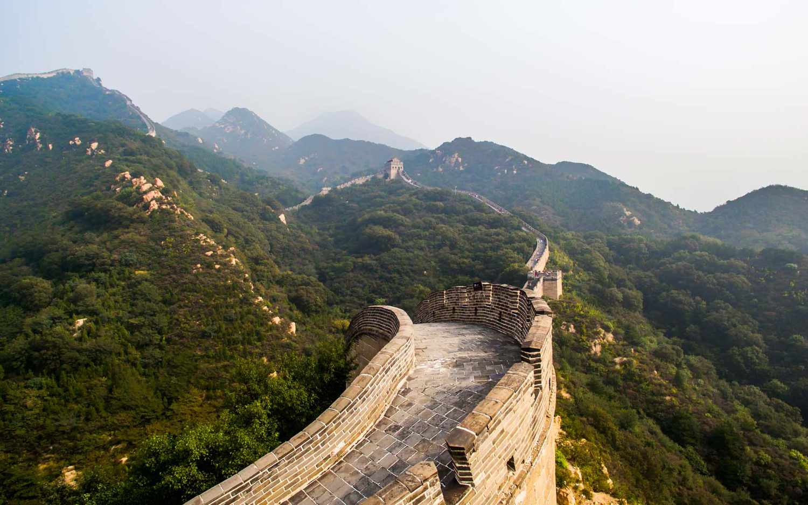

There are 15 strategic passes from the East to the West
The Great Wall stretches across 15 northern Chinese provinces, municipalities and autonomous regions, from the Bohai Sea in the east to the Gobi Desert, 2,500 kilometers away in the west. There are 15 geographically important passes built along the route.

The total length of the Great Wall is 21196.18 km
The Great Wall is the largest man-made project in the world. The complete route is over 20,000 km, stretching from the east seaside to the west desert in northern China, winding up and down across mountains and plateaus like a dragon.
It took over 2,000 years to construct the wall
The first emperor of China, Qin Shi Huang took the remnants of ancient fortifications, walls, and earthworks and linked them into a unified wall circa 220 B.C.